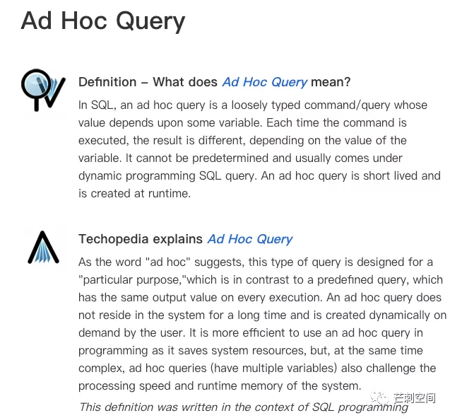

题记：业务方的想法就像天上的云，多变，琢磨不透。
昨天被产品小姐姐拉去讨论一个需求，看到她优秀的 Ad Hoc 产品文档；今天又看到有文章说 “真正体现数仓价值的部分，包括且又不局限于数据可视化、BI、OLAP、即席查询…”。那么，在我等午饭的时候，来讨论一下这个拉丁语名字看起来很厉害的 Ad Hoc Query。顺便吐槽一下这个 “自我矛盾” 的即席查询。
愿天下再无即席查询。
Ad Hoc
先直接抄袭产品小姐姐文档里对 Ad Hoc 的解释。
Ad Hoc 源自于拉丁语，意思是 “for this” 引申为 “for this purpose only”，即 “为某种目的设置的，特别的” 意思。
Ad Hoc 和即席有什么关系？！
有趣的是，“即席” 这个词，在中文里几乎没有别的使用场景了。即席发挥，和即兴是同一个意思。说不定翻译成 “即兴查询” 更能体现其飘忽不定的本质。数据分析师们最烦的就是这种需求，来无影去无踪。粗暴地说，即兴查询就是一次性需求，80% 都是 “垃圾需求”。
Ad Hoc Query
Type 1：自助式 Report 工具
对于 Ad Hoc Query 维基百科中这样解释（注意我荧光笔高亮处）：
这种类型的即席查询在交付物角度基本都是报表需求，旨在通过产品功能和技术手段，让用户能够方便地自助地完成多变的报表开发需求，达成自助取数的目的。需要明确的是，这里的报表仅是表格型报表，基本不涉及到可视化图标。而正是用户取数需求的不明确和多变，以及用户数据库技术的缺失，造成了数据库的性能压力和运维风险，使得需要 “数据库专家细心设计过、预先编制好并做过优化”。技术上可能涉及到 OLAP 等。另外一个角度，数据指标的计算也会在产品层被封装，此类技术据说叫做 “语义层”，这样用户只需要选择需要的指标，而不用关心指标的计算实现，既是一种方便，也避免了指标的分支、版本等问题。
总结而言，此种即席查询，本质上是处于不自由境地中的自由查询。语义层的确能够带来数据的统一，但如果即席查询的底层数据只单一地应用于即席查询，而不能用于真正的数据分析，数据分析系统建设的开销和回报实在差距过大。毕竟，从业务系统导出汇总数据，然后在 Excel 里处理分析已经是及其成熟的操作了。如果即席查询的结果，最后还是导出到 Excel 里去做处理和分析，何苦在业务系统和数据系统做重复建设呢 ？（个人陋见，需在具体场景下详细讨论）
Type 2：勇往直前的 Query
当然，我们也能找到这样的偏数据库层的解释：

简单地说，我打开一个 Console 向数据库 Query 了一段 SQL，算是即席查询；业务系统的程序里不按存储过程等方式，而是草率地直接 Query 了数据库，也是即席 查询；数据查询工具，将查询信息参数化后动态生成 SQL 语句去 Query 数据库，也是即席查询。
在这种定义范围内，所有分析师写的 Query SQL 都有即席查询的意味，因为我们既不处理事务，也不采用存储过程，还非常地 Ad Hoc。
Type 3：大数据语境下的即席查询
十分有趣的是，在大数据的语境下，Ad Hoc 才有了 “即席” 的意思。很多无语义层的 Query 工具都被认为是 Ad Hoc 工具，像 Impala、Kylin、Druid。究其本质，能够在足够短的时间内完成海量数据的 query，的确功劳巨大。此处的 Kylin 虽然也还是 OLAP 的一种，但解决的首要问题是查询响应时间的问题，而不是方便不会 SQL 的用户的问题。即席等待，无需离席，是真的 “即席”。
Ad Hoc Analysis？不如即席分析准确
必须拓展开谈谈 Ad Hoc Analysis，有见到过这种说法，但我一直觉得不够准确。哪里有什么 Analysis 不是 for this purpose only 的！有直接把 Ad Hoc （明显少写了 Query）当作 Ad Hoc Analysis 的。虽然在个别分析师和绝大部分非分析人员眼里，Query 可能和 Analysis 没有区别，但我还是觉得 查询 和 分析 是天差地别的两件事情。
即席分析的理想状态应该是分析工具的灵活性和易用性。分析工具需能够支持各种灵活复杂的查询，又要将复杂和繁琐的技术问题封装掉，用户应当只关注分析思路，而无需关心任何的下列问题：数据处理、查询语句、查询的性能、可视化的细节。
市面上有很多优秀的分析工具，但很难说有谁 100% 达成了这个理想态。
（吃完午饭又补了一段）